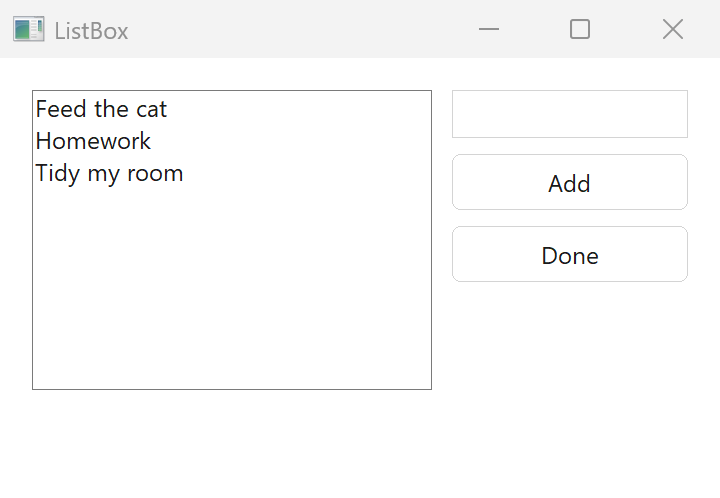

กล่องรายการ (ListBox)
ในกล่องเครื่องมือ: กล่องรายการ · เทียบกับ WinForms: ListBox
กล่องที่แสดงรายการเป็นบรรทัด ๆ ให้เห็นทั้งหมดพร้อมกัน (ต่างจาก ComboBox ที่ต้องกดก่อน) เหมาะกับรายการสิ่งที่ต้องทำ รายชื่อ
- ใส่รายการตอนออกแบบใน Items หรือในโค้ดด้วย
items_add - Sorted เรียงตามตัวอักษรเอง · SelectionMode =
multiเลือกได้หลายบรรทัดด้วย Ctrl/Shift - ดับเบิลคลิกในตัวออกแบบ ได้ method ตอนเลือกบรรทัด (
…_chosen)

อยู่ในกล่องเครื่องมือกลุ่ม คอนโทรลทั่วไป (Common controls) - ลากมาวางบนฟอร์ม แล้วตั้ง Id (ชื่อที่ใช้ในโค้ด) ในหน้าต่าง Properties · ในโค้ดเรียกมันว่า ui.ชื่อId ซึ่งเป็นชนิด phai_ui::ctl::ListBox
ตัวอย่าง
1. รู้ว่าเลือกบรรทัดไหน
selected_item() ได้ข้อความของบรรทัดที่เลือก:
fn tasks_chosen(&mut self, ui: &ListboxDemoUi) {
if let Some(t) = ui.tasks.selected_item() {
ui.status.set_text(&format!("Chosen: {t}"));
}
}2. เพิ่มบรรทัด
เอาข้อความจากช่องพิมพ์มาต่อท้าย (ไม่เอาช่องว่าง):
fn add_clicked(&mut self, ui: &ListboxDemoUi) {
let task = ui.new_task.text();
if !task.trim().is_empty() {
ui.tasks.items_add(task.trim());
ui.new_task.set_text("");
}
}3. ลบบรรทัดที่เลือก
selected_index() ได้ตำแหน่ง แล้ว items_remove_at ลบทิ้ง:
fn done_clicked(&mut self, ui: &ListboxDemoUi) {
// The line chosen goes; nothing chosen, nothing happens.
if let Some(i) = ui.tasks.selected_index() {
ui.tasks.items_remove_at(i);
ui.status.set_text(&format!("{} left to do", ui.tasks.items_count()));
}
}หน้าต่างตัวอย่างทั้งหมด: listbox_demo.phaiform กับ listbox_demo.rs ในโปรเจกต์ docs/help-src/examples/controls - รันด้วย cargo run -- listbox
Method ของ ListBox
| Method | ทำอะไร |
|---|---|
items_add(s: &str) -> usize | เพิ่มบรรทัดท้ายสุด (หรือในที่ของมันเมื่อ Sorted) ได้ตำแหน่งที่ไปอยู่ |
items_insert(at: usize, s: &str) | แทรกบรรทัดที่ตำแหน่ง at |
items_remove_at(i: usize) | ลบบรรทัดที่ i |
items_clear() | ลบทุกบรรทัด |
items_count() -> usize | มีกี่บรรทัด |
item(i: usize) -> String | ข้อความของบรรทัดที่ i |
selected_index() -> Option<usize> | บรรทัดที่เลือก - None ถ้าไม่มี |
set_selected_index(i: Option<usize>) | เลือกบรรทัดนี้ (None = ไม่เลือก) |
selected_indices() -> Vec<usize> | ทุกบรรทัดที่เลือก (เมื่อ SelectionMode = multi) |
selected_item() -> Option<String> | ข้อความของบรรทัดที่เลือก |
Method ที่ control ทุกตัวมี (ข้อความ เปิด/ปิด แสดง/ซ่อน ตำแหน่ง …)
| Method | ทำอะไร |
|---|---|
hwnd() -> HWND | ตัว control เอง (HWND) ใช้กับคำสั่งของ Windows ที่ต้องการหน้าต่าง - เหมือน Handle |
text() -> String | อ่านข้อความของมัน |
set_text(s: &str) | เปลี่ยนข้อความของมัน |
enabled() -> bool | ใช้งานได้อยู่ไหม |
set_enabled(on: bool) | true ใช้งานได้ · false เป็นสีเทา กดไม่ได้ |
visible() -> bool | มองเห็นอยู่ไหม |
set_visible(on: bool) | แสดงหรือซ่อน |
show() | แสดง |
hide() | ซ่อน |
focus() | ให้แป้นพิมพ์มาที่มัน |
focused() -> bool | แป้นพิมพ์อยู่ที่มันไหม |
bring_to_front() | ยกขึ้นไปอยู่บนสุด เหนือ control ที่ซ้อนกัน |
send_to_back() | ส่งไปอยู่ล่างสุด |
refresh() | วาดใหม่ทันที |
invalidate() | ขอให้วาดใหม่ (Windows วาดให้เมื่อว่าง) |
bounds() -> RECT | ตำแหน่งและขนาดบนหน้าต่าง (RECT) |
client_size() -> (i32, i32) | ความกว้างและความสูงด้านใน (กว้าง, สูง) |
set_bounds(x: i32, y: i32, w: i32, h: i32) | ย้ายและเปลี่ยนขนาด: x, y, กว้าง, สูง |
point_to_screen(x: i32, y: i32) -> (i32, i32) | แปลงจุดบน control เป็นจุดบนจอ |
point_to_client(x: i32, y: i32) -> (i32, i32) | แปลงจุดบนจอเป็นจุดบน control |
find_form() -> HWND | หน้าต่าง (ฟอร์ม) ที่มันอยู่ |
suspend_layout() | หยุดจัดตำแหน่งชั่วคราว ระหว่างเปลี่ยนหลายอย่างพร้อมกัน |
resume_layout() | จัดตำแหน่งต่อ หลัง suspend_layout |
set_tooltip(text: &str) | ข้อความเล็ก ๆ ที่ขึ้นเมื่อชี้เมาส์ค้างไว้ - เหมือน ToolTip |
do_drag_drop(text: &str) -> bool | เริ่มลากข้อความนี้ออกไปวางที่อื่น |
set_cursor(name: &str) | รูปเมาส์เมื่อชี้มัน เช่น "hand", "wait", "ibeam" |
Properties
ตั้งได้ในหน้าต่าง Properties เมื่อเลือกมันบนฟอร์ม - ตารางนี้สร้างจาก Phai Studio เอง จึงตรงกับที่เห็นในโปรแกรมเสมอ
| Property | ค่าเริ่มต้น | ทำอะไร |
|---|---|---|
| ออกแบบ | ||
| รหัส | listbox | ชื่อ control ในโค้ด และ #id ใน CSS |
| คลาส | - | คลาส CSS จากธีม เช่น primary หลายคลาสคั่นด้วยช่องว่าง |
| ล็อก | False | ล็อกไว้: เมาส์และปุ่มลูกศรจะไม่ย้ายหรือปรับขนาดในหน้าออกแบบ |
| รูปลักษณ์ | ||
| ฟอนต์ | Segoe UI, 9pt | ขนาดและน้ำหนักของตัวอักษร - Segoe UI, 9pt คือของ Windows |
| ขนาดฟอนต์ | - | ขนาดตัวอักษร (พอยต์) ของ control นี้ ทับของฟอร์ม |
| ตัวหนา | False | แสดงข้อความเป็นตัวหนา |
| สีพื้น | - | สีพื้นหลัง ทับธีม - เขียนเป็น CSS #id { background } |
| สีตัวอักษร | - | สีข้อความ ทับธีม - #id { color } |
| สีขอบ | - | สีขอบ ทับธีม - #id { border-color } |
| มุมมน | - | ความมนของมุม เป็นพิกเซล - #id { border-radius } |
| ToolTip | - | ข้อความที่ขึ้นเมื่อวางเมาส์ค้างไว้ |
| Cursor | default | รูปตัวชี้เมาส์เมื่ออยู่บนตัวนี้ |
| Border width | - | ความหนาของขอบ (พิกเซล) - #id { border-width } |
| Animation | - | สีเคลื่อนไหวเอง: blink 1s infinite (กะพริบ), pulse 1.5s infinite (เต้น), fade-in 400ms (ค่อย ๆ ปรากฏ) หรือ @keyframes ในธีม - #id { animation } |
| FontFamily | - | แบบตัวอักษรของข้อความ เช่น Consolas สำหรับ log ส่วน Segoe UI คือแบบของ Windows เอง |
| Transition | - | สีค่อย ๆ เปลี่ยนเมื่อสถานะเปลี่ยน เช่น 150ms, 0.3s ease-out - #id { transition } |
| พฤติกรรม | ||
| ใช้งานได้ | True | ใช้งานได้ หรือแสดงเป็นสีเทา |
| มองเห็น | True | แสดงเมื่อเปิดหน้าต่างหรือไม่ |
| TabIndex | - | ลำดับที่ปุ่ม Tab เลื่อนผ่าน ถ้าไม่ตั้งใช้ลำดับในฟอร์ม |
| TabStop | True | ปุ่ม Tab หยุดที่ตัวนี้หรือไม่ |
| AllowDrop | False | ลากไฟล์จาก Explorer มาวางได้ - ใช้ event DragDrop |
| Sorted | False | เรียงรายการตามตัวอักษร |
| SelectionMode | one | เลือกได้ทีละบรรทัด หรือหลายบรรทัดด้วย Ctrl และ Shift |
| ข้อมูล | ||
| รายการ | - | บรรทัดละหนึ่งรายการ คอลัมน์ของรายการเขียนเป็น ชื่อ:ความกว้าง |
| DataBindings | - | id ของแหล่งข้อมูลผูกกับคอลัมน์ - people.name: control แสดงคอลัมน์นั้นของแถวปัจจุบัน และสิ่งที่แก้จะเขียนกลับ |
| การจัดวาง | ||
| ตำแหน่ง | 12, 12 | มุมซ้ายบนนับจากของฟอร์ม ที่สเกล 100% |
| X | 12 | ระยะจากซ้ายของฟอร์ม ที่สเกล 100% |
| Y | 12 | ระยะจากบนของฟอร์ม ที่สเกล 100% |
| ขนาด | 120, 24 | ความกว้างและความสูง ที่สเกล 100% |
| กว้าง | 120 | ที่สเกล 100% |
| สูง | 24 | ที่สเกล 100% |
| ติดขอบ | none | ติดขอบหนึ่งของฟอร์ม หรือเต็มพื้นที่ที่เหลือ |
| ยึดขอบ | left top | ขอบที่รักษาระยะไว้เมื่อหน้าต่างขยาย |
Events
ดับเบิลคลิกชื่อ event ในแท็บ Events ของ Properties แล้ว Phai Studio จะเขียน method ให้ (ชื่อในตารางนี้สมมติว่า Id ของมันคือ listbox และอยู่บนฟอร์ม MainWindow) - ชี้เมาส์ที่ชนิดของ e เพื่อดูชื่อเต็ม
| Event | ทำอะไร | method ที่ Phai Studio เขียนให้ |
|---|---|---|
| เลือก | เมธอดที่ทำงานเมื่อเกิดเหตุการณ์นี้ ดับเบิลคลิก control เพื่อเขียน | fn listbox_chosen(&mut self, ui: &MainWindowUi) |
| Click | ถูกคลิกด้วยปุ่มซ้าย | fn listbox_click(&mut self, ui: &MainWindowUi) |
| DoubleClick | ถูกดับเบิลคลิก | fn listbox_double_click(&mut self, ui: &MainWindowUi) |
| Enter | ได้รับโฟกัส แป้นที่กดต่อไปจะเข้าตัวนี้ | fn listbox_enter(&mut self, ui: &MainWindowUi) |
| Leave | โฟกัสย้ายไปที่อื่น | fn listbox_leave(&mut self, ui: &MainWindowUi) |
| KeyDown | กดแป้นขณะมีโฟกัส - e.key, e.ctrl; เรียก e.set_handled() เพื่อไม่ให้ control ได้รับแป้นนั้น | fn listbox_key_down(&mut self, ui: &MainWindowUi, e: &KeyEventArgs) |
| KeyUp | ปล่อยแป้นขณะมีโฟกัส | fn listbox_key_up(&mut self, ui: &MainWindowUi, e: &KeyEventArgs) |
| KeyPress | พิมพ์ตัวอักษร - e.ch; เรียก e.set_handled() เพื่อไม่ให้ตัวอักษรเข้าไป | fn listbox_key_press(&mut self, ui: &MainWindowUi, e: &KeyPressEventArgs) |
| MouseEnter | เมาส์เลื่อนเข้ามาบนตัวนี้ | fn listbox_mouse_enter(&mut self, ui: &MainWindowUi) |
| MouseLeave | เมาส์เลื่อนออกจากตัวนี้ | fn listbox_mouse_leave(&mut self, ui: &MainWindowUi) |
| MouseDown | กดปุ่มเมาส์บนตัวนี้ - e.x, e.y, e.button | fn listbox_mouse_down(&mut self, ui: &MainWindowUi, e: &MouseEventArgs) |
| MouseUp | ปล่อยปุ่มเมาส์บนตัวนี้ | fn listbox_mouse_up(&mut self, ui: &MainWindowUi, e: &MouseEventArgs) |
| MouseMove | เมาส์เคลื่อนบนตัวนี้ | fn listbox_mouse_move(&mut self, ui: &MainWindowUi, e: &MouseEventArgs) |
| MouseWheel | หมุนลูกล้อเมาส์บน control - e.delta ทีละ 120 ต่อหนึ่งจังหวะ มากกว่า 0 คือหมุนออกจากตัว | fn listbox_mouse_wheel(&mut self, ui: &MainWindowUi, e: &MouseEventArgs) |
| Resize | ขนาดเปลี่ยน - หน้าต่างถูกย่อขยายและตัวนี้ยึดขอบหรือ dock ไว้ | fn listbox_resize(&mut self, ui: &MainWindowUi) |
| DragDrop | มีของถูกวางลงมา: ไฟล์จาก Explorer (e.files) หรือข้อความที่ลากมาจาก control อื่น (e.text, e.source) | fn listbox_drag_drop(&mut self, ui: &MainWindowUi, e: &FileDropEventArgs) |
ลองทำเอง
- ตั้ง Sorted = True แล้วดูว่ารายการใหม่ไปอยู่ตรงไหน
- ดับเบิลคลิกบรรทัด (event DoubleClick) แล้วให้ข้อความไปอยู่ในช่องพิมพ์เพื่อแก้ไข